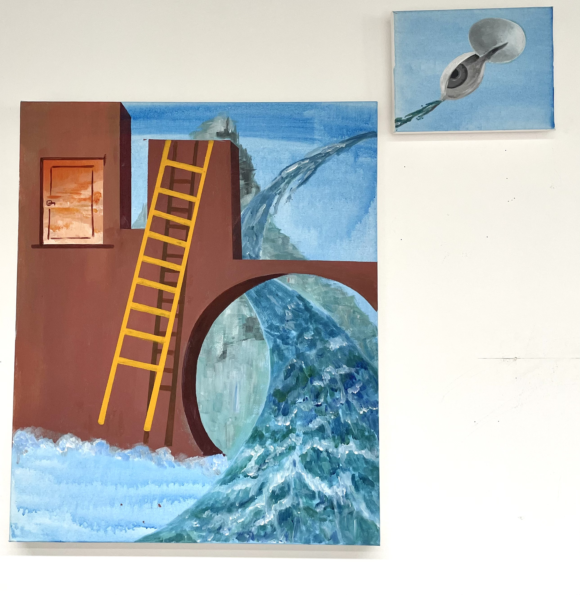

Painting
Illustration
My artistic practice thrives on the exploration of various materials, allowing me to push
the boundaries
of traditional artistic mediums. Through my work, I strive to capture the essence of diverse subjects,
encompassing
portraits, landscapes, and still life, in a multidimensional and engaging manner.
Ultimately, my aim is to create artwork that not only visually stimulates but also invites a deeper
connection with the
viewer. By incorporating multiple materials and subjects, I seek to explore the vast possibilities of
artistic
expression, blurring the boundaries between mediums and genres. I hope my work sparks curiosity, engages the
imagination, and elicits an emotional response, encouraging viewers to reflect on their own experiences and
perceptions
of the world.
For digital illustration,the manga style provides a powerful platform for exploring a wide range of themes,
from fantastical adventures to
intimate introspections. It allows me to blend the boundaries of reality and imagination, infusing each
artwork with a
sense of magic and wonder.
paintings
- 
-
This work draws inspiration from the realm of dreams, blending fragments of daily life in a
non-logical way. Through the
interplay of red walls, stairs, oceans, clouds, eggs, and eyes, I invite viewers to explore the
depths of perception and
imagination. The composition of familiar elements in unexpected configurations breaks the
chains of reality, evoking
curiosity and wonder. By transcending conventional narratives, I delve into the subconscious,
unveiling hidden meanings
and connections. Embracing intuition, I create a dream-like atmosphere that challenges
preconceived notions. My
intention is to transport viewers to a realm where imagination and reality coalesce, where the
boundaries between
conscious and unconscious dissolve.